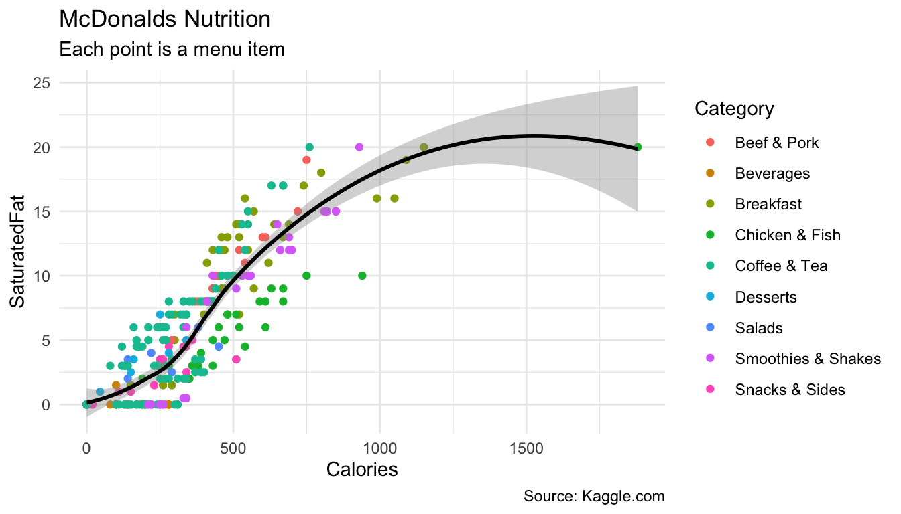
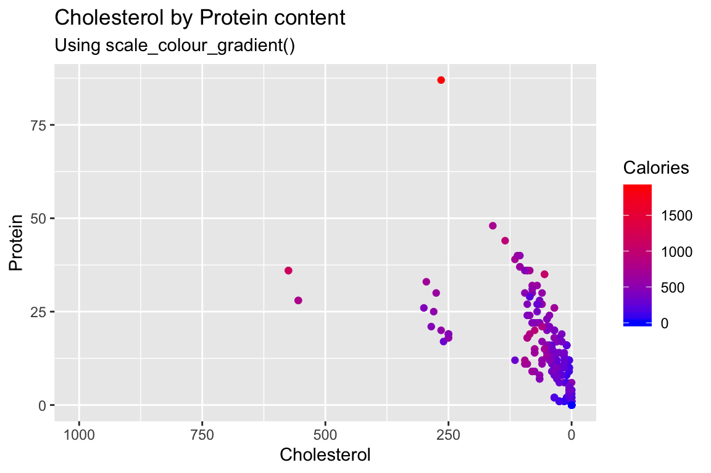
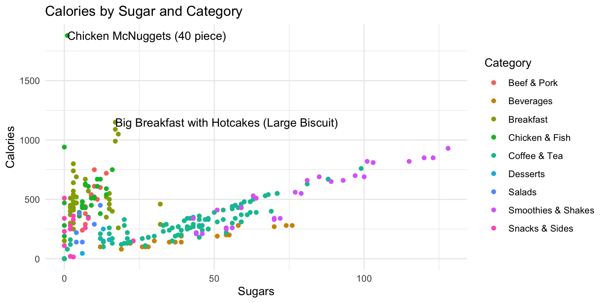

from today.com
Overview
In this practical you’ll practice plotting data with the amazing ggplot2 package. By the end of this practical you will know how to:
- Build a plot step-by-step.
- Use multiple geoms.
- Work with facets.
- Adjust colors and add labels.
- Create image files.
Tasks
A - Setup
Open your
dataanalyticsR project. It should already have the folders1_Dataand2_Code. Make sure that the data files listed in theDatasetssection above are in your1_Datafolder.Open a new R script. At the top of the script, using comments, write your name and the date and “Plotting Practical”.
## NAME
## DATE
## Plotting PracticalSave the file under the name
plotting_practical.Rin the2_Codefolder.Using
library()load thetidyverseandggthemespackages for this practical listed in the Functions section above. If you don’t have them installed, you’ll need to install them, see the Functions tab above for installation instructions.
# Load packages
library(tidyverse)
library(ggthemes)- For this practical, we’ll use the
mcdonalds.csvdata set, which contains nutrition information about items from McDonalds. Usingread_csv(), load the data into R and store it as a new object calledmcdonalds.
# Load mcdonalds.csv as a new object called mcdonalds
XX <- read_csv("XX/XX")- Using
print(),summary(),head(), andView(), explore the data to make sure it was loaded correctly.
B - Building a plot step-by-step
In this section, you’ll build the following plot step by step.

- Using
ggplot(), create the following blank plot using thedataandmappingarguments (but no geom). UseCaloriesfor the x aesthetic andSaturatedFatfor the y aesthetic
ggplot(data = mcdonalds,
mapping = aes(x = XX, y = XX))- Using
geom_point(), add points to the plot
ggplot(data = mcdonalds,
mapping = aes(x = XX, y = XX)) +
geom_point()- Using the
coloraesthetic mapping, color the points by theirCategory.
ggplot(mcdonalds, aes(x = XX, y = XX, col = XX)) +
geom_point() - Add a smoothed average line using
geom_smooth().
ggplot(mcdonalds, aes(x = XX, y = XX, col = XX)) +
geom_point() +
geom_smooth() - Oops! Did you get several smoothed lines instead of just one? Fix this by specifying that the line should have one color:
"black". When you do, you should then only see one line.
ggplot(mcdonalds, aes(x = XX, y = XX, col = XX)) +
geom_point() +
geom_smooth(col = "XX") - Add appropriate labels using the
labs()function.
ggplot(mcdonalds, aes(x = XX, y = XX, col = XX)) +
geom_point() +
geom_smooth(col = "XX") +
labs(title = "XX",
subtitle = "XX",
caption = "XX")- Finally, set the plotting theme to
theme_minimal(). You should now have the final plot!
ggplot(mcdonalds, aes(x = XX, y = XX, col = XX)) +
geom_point() +
geom_smooth(col = "XX") +
labs(title = "XX",
subtitle = "XX",
caption = "XX")+
xlim(XX, XX) +
theme_minimal()C - Adding multiple geoms
- Create the following plot showing the relationship between menu category and calories
ggplot(data = mcdonalds, aes(x = XX, y = XX, fill = XX)) +
geom_violin() +
guides(fill = FALSE) +
labs(title = "XX",
subtitle = "XX")Now add
+ geom_jitter(width = .1, alpha = .5)to your plot, what do you see?Play around with your plotting arguments to see how the results change! Each time you make a change, run the plot again to see your new output!
- Change the
widthargument ingeom_jitter()towidth = 0. - Instead of using
geom_violin(), trygeom_boxplot(). - Remove the
fill = Categoryaesthetic entirely.
D - Scaling

- Create the above scatterplot showing the relationship between
CholesterolandProteinstarting with the template below.
ggplot(mcdonalds, aes(x = XX,
y = XX)) +
geom_point() +
theme_minimal() +
labs(title = "XX",
subtitle = "XX")Color the points according to their
Caloriesby specifying thecolaesthetic.Change the colors by including the additional module
+ scale_colour_gradient(low = "blue", high = "red").Customize! Look at all of the named colors in R by running
colors(). Then, use two new colors in your plot.To plot
Cholestoralon a range from to 0 to 1000 rather than the automatically chosen range add+ scale_x_continuous(limits = c(XX, XX))or simply+ xlim(XX, XX)Finally, to reverse the order of
Cholestoral, that for it to go from large to small values (Caution: the default should be to plot axes in ascending order), reverse the values inxlim(XX, XX).
E - Adding labels
Now, let’s create the following plot with additional point labels using geom_text():

- Start with the following template:
ggplot(mcdonalds, aes(x = XX,
y = XX,
col = XX)) +
geom_point() +
theme_minimal() +
labs(title = "XX")Try adding labels to the plot indicating which item each point represents by adding
+ geom_text().Where are the labels? Ah, we didn’t tell
ggplotwhich column in the data represents the item descriptions. Fix this by specifying thelabelaesthetic in your first call to theaes()function. That is, includelabel = Itemunderneath the linecol = XX. Now you should see lots of labels!Using the
dataargument ingeom_text(), specify that the labels should only apply to items over 1100 calories (hint:geom_text(data = mcdonalds %>% filter(XX > XX)))
F - Create facets
Now with the previous scatter plot of
SugarsandCaloriesintroduce facets according toCategoryby adding+ facet_wrap(~ XX).With the same plot, instead of
+ facet_wrap(~ XX)try+ facet_grid(XX ~ XX)to facet according to two variables in a cross-tabular fashion. As facet variables use two logical statements, namely wheherTotalFatis larger than20and whetherCholesterolis larger than50. (Hint:+ facet_grid(XX > XX ~ XX > XX).Finally, if for you the labels didn’t fid the facet panels, correct this by setting the
sizeargument insidegeom_text()to a small value (e.g.,2).
G - Customize plots using theme() facets
- Now a few aesthetic aspecs in the previous plot using the
theme(). We still want to usetheme_minimal(), but make a few adjustments. Before we get to that, however, first store your plot in an object calledmcdonalds_ggusing the template below.
mcdonalds_gg <- ggplot(...) + ... # Replace by your plotting code- Ok, let’s start by making the axis titles more legible using the
axis.titleargument and theelement_text()helper function. See template.
mcdonalds_gg + theme(XX = element_text(size = XX))- Now in addition give the facet headers a grey (e.g.,
grey75) backround and its border to'white'using thestrip.backgroundargument andelement_rect()and change the color of the header text to white (usingstrip.text).
mcdonalds_gg + theme(XX = element_text(XX = XX),
XX = element_rect(XX = XX, XX = XX))G - Saving plots
It’s time to save your favorite plot to an image file! Pick your favorite plot you’ve created so far. Then, assign the plot to a new object called
mcdonalds_favorite.Evaluate your
mcdonalds_favoriteobject to see that it does indeed contain your plot.Save your plot to a .pdf-file called
mcdonalds.pdfusingggsave(). When you finish, find your plot in3_Figuresand open it to see how it looks!
# Save mcdonalds_gg to a pdf file
ggsave(filename = "mcdonalds.pdf",
path = '3_Figures',
device = "pdf",
plot = mcdonalds_gg,
width = 4,
height = 4,
units = "in")Play around with the
widthandheightarguments to change the dimensions of the plot.Customize your code to create a jpeg image called
mcdonalds.jpeg
Datasets
| File | Rows | Columns |
|---|---|---|
| mcdonalds.csv | 260 | 24 |
First 5 rows and columns of mcdonalds.csv
| Category | Item | ServingSize | Calories | CaloriesfromFat |
|---|---|---|---|---|
| Breakfast | Egg McMuffin | 4.8 oz (136 g) | 300 | 120 |
| Breakfast | Egg White Delight | 4.8 oz (135 g) | 250 | 70 |
| Breakfast | Sausage McMuffin | 3.9 oz (111 g) | 370 | 200 |
| Breakfast | Sausage McMuffin with Egg | 5.7 oz (161 g) | 450 | 250 |
| Breakfast | Sausage McMuffin with Egg Whites | 5.7 oz (161 g) | 400 | 210 |
Functions
Packages
| Package | Installation |
|---|---|
tidyverse |
install.packages("tidyverse") |
ggthemes |
install.packages("ggthemes") |
Resources
Documentation
The main
ggplot2webpage at http://ggplot2.tidyverse.org/ has great tutorials and examples.Check out Selva Prabhakaran’s website for a nice gallery of ggplot2 graphics http://r-statistics.co/Top50-Ggplot2-Visualizations-MasterList-R-Code.html
ggplot2is also great for making maps. For examples, check out Eric Anderson’s page at http://eriqande.github.io/rep-res-web/lectures/making-maps-with-R.html
Cheatsheets

from R Studio